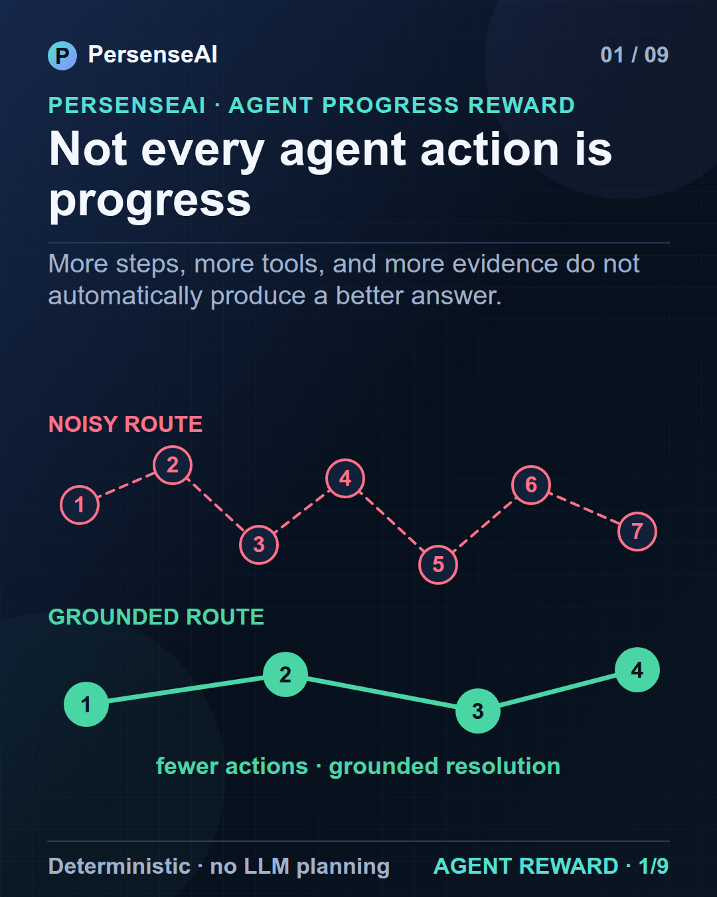
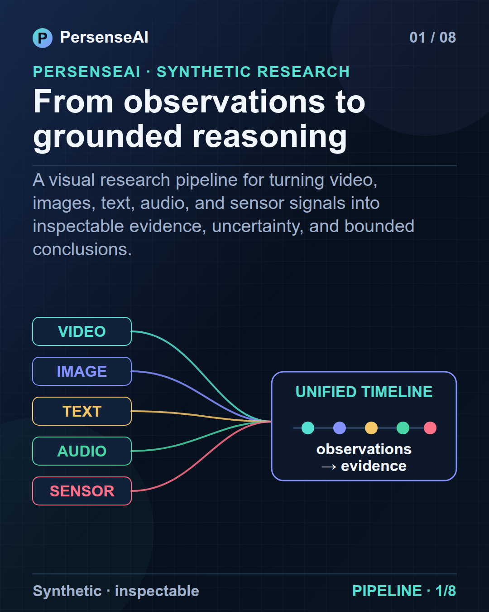
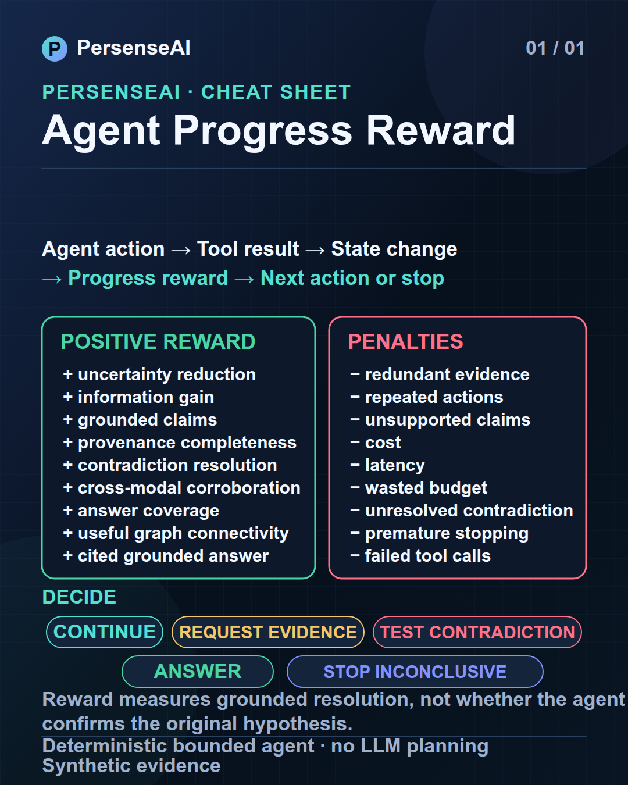
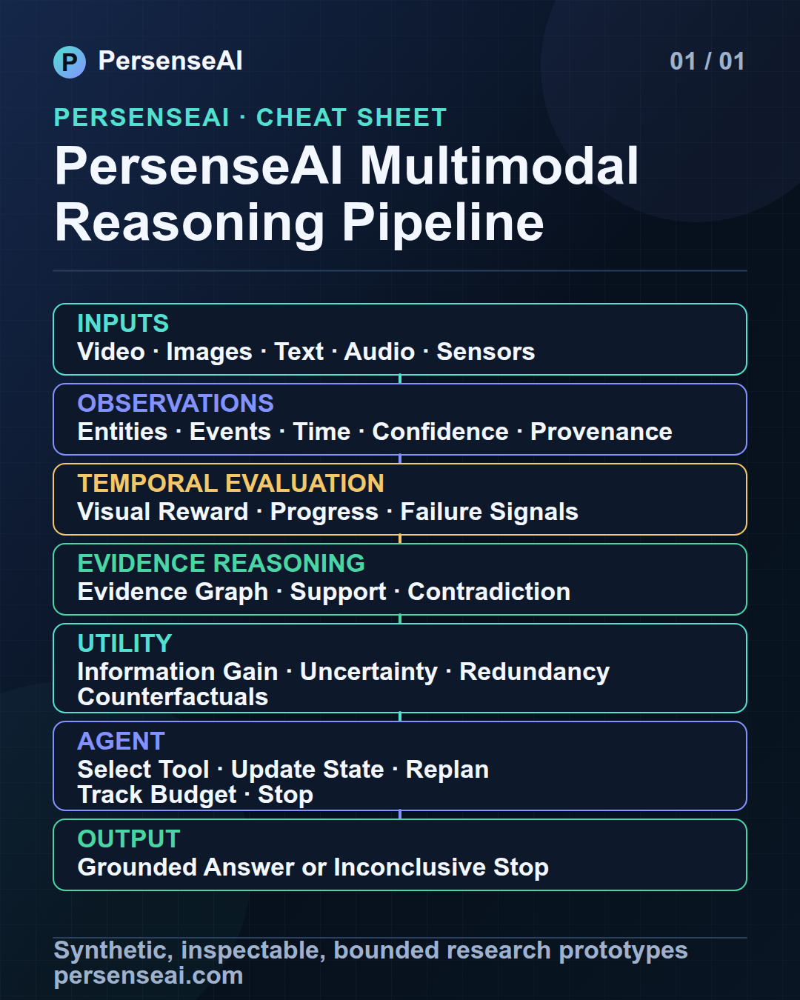

Publication review · v1.0
Social launch package
Two carousel stories, two standalone cheat sheets, and one shared 40-second video system—covering the complete multimodal pipeline and the latest Agent Progress Reward feature.
Launch first · 9 slides
Agent Progress Reward
How does an evidence-seeking agent know it made progress?

Publication caption
Loading caption…
Per-slide alt text
Loading alt text…
Full context · 8 slides
From observations to grounded reasoning
Multimodal signals become inspectable evidence, uncertainty, and bounded conclusions.

Publication caption
Loading caption…
Per-slide alt text
Loading alt text…
Standalone references
Cheat sheets
Designed to remain understandable without the carousel context.


Cheat-sheet captions
Loading captions…
Cheat-sheet alt text
Loading alt text…
40 seconds · 9:16 primary
AI video production package
One timed storyboard, with and without a recurring presenter. No video file is generated.
Prompt A · recurring hero actress
Loading production prompt…
Prompt B · pure visualization
Loading production prompt…
Voiceover · 86 words
Loading voiceover…
Subtitle timing · 00:00–00:40
Loading subtitles…
Scene timeline
Loading scene timeline…
Video publication caption
Loading caption…
Review boundary
All scenarios and evidence are synthetic. Progress reward is an explanatory evaluation heuristic, not truth or legal weight. No forensic, operational, surveillance, production, or legal validity is claimed.